1.2. Linear Regression with One Variable
1.2.1. Model and Cost Function
이번장에서는 Linear regression 알고리즘에 대해 알아보고 Model에 대해서 그리고 지도학습의 전체 과정에 대해서 알아볼 것이다. Linear regression은 입력된 값을 기반으로 결과값을 예측하는 알고리즘이다. 이장에서는 집값을 예측하는데 Linear regression을 사용해볼 것이다. 그것을 위해서 cost function 과 gradient descent 라는 개념에대해서 살펴볼 것이다.
1.2.2 Linear Regression
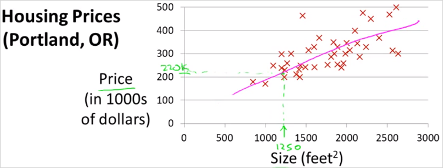
위와 같은 데이터가 있을때, 1250 사이즈의 집이 있다고 치면, 얼마의 값으로 팔면 좋을지 예측하는 문제가 있다고 하자. 가장 먼저 해볼 수 있는것은 Model을 만드는 것이다. 가장 간단한 모델은 그림의 분홍색 그래프처럼 linear 한 선을 그어보는 것이다. 이것이 Supervised learning의 한 예시이다. 그이유는 이 문제에서 나의 문제(팔 가격 예측)에 적합한 답을 주기 때문이다.
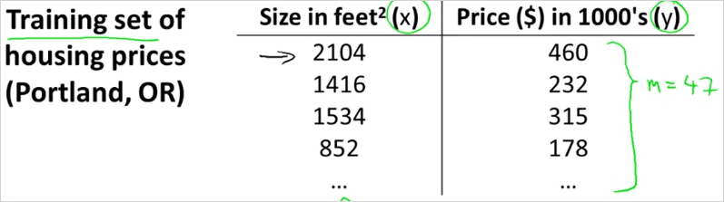
이것은 traning set이라고 하는 data set이다. 우리가 할 수 있는 일은 이 데이터로부터 어떻게 주택 가격을 예측할지 학습시키는 것이다.
이 강의에서는 다음의 notation을 사용하기로 약속한다.
m: 학습 데이터 갯수x: input값, featurey: output, target
가령 위의 표에서 이다.
1.2.3. Model Representation
중요한 Hypothesis Function (가설 함수) 개념에대해 알아보자. 결국 머신러닝의 최종목적은 예측을 위해 이 가설함수를 생성하는것이다. 데이터를 통해 학습을 진행하는것은 함수의 parameter를학습하는 것과 같다. 만약 데이터가 직선(linear)이라면 Hypothesis Function은 다음과 같이 1차 방정식으로 나타낼 수 있다. . 여기서 학습을 한다는것은 기존의 데이터를 잘 표현하는 , 찾는것이다. 도식화 하면 아래와 같다.
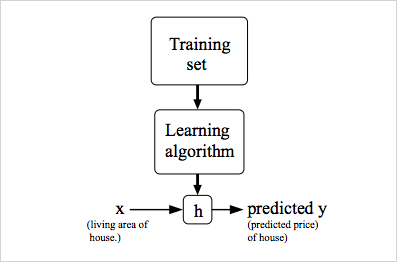
training set 데이터를 학습 알고리즘을 거치면 함수가 나오는데 그것을
h라고 표기한다. Hypothesis Function 이라고 부른다.
1.2.4. Cost Function (비용함수)
Cost Function은 Hypothesis Function의 정확도를 평가하기 위함 도구다. h(x) 함수가 라고 할때, 을 어떻게 선택하느냐에 따라 는 아래의 그래프를 갖게 된다. 비용함수는 주어진 데이터(training set)를 가지고 X에 상응하는 Y를 정확히 예측하는 함수 h를 찾을때 필요하다.
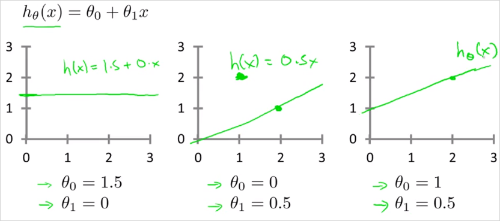
그래프에서 볼수 있듯이 어떤 값을 선택하느냐에 따라서 직선의 기울기가 달라진다. 을 적절하게 선택하여 만든 h(x)의 값과, 실제 결과값 y와 얼마나 차이가 있는지 확인하는것이 cost function이다. 이 차이가 적을 수록 우리는 정확한 가설함수h(x)를 찾은것이다. 그렇게 하기 위해서 (예측값 - 실제값)의 차이가 최소화가 되도록하는 찾으면 되는것이다. 그것을 공식화하면 아래와 같다. 이것이 Cost Function이다. 로 표현되는 이 Cost Function은 오차함수의 제곱이라도고 불린다. 이 제곱함수는 회귀분석(regression)에서 가장 많이 사용된다. (제곱을 하는 이유는 음수, 또는 미분을 해야하기 때문)

자세히 살펴보면 공식자체는 별게 없다. training set에서 각 (예측값i - 실제값i)을 제곱하고 합을구한뒤 전체 training set 갯수 m으로 나눠서 평균을 낸것일 뿐이다.
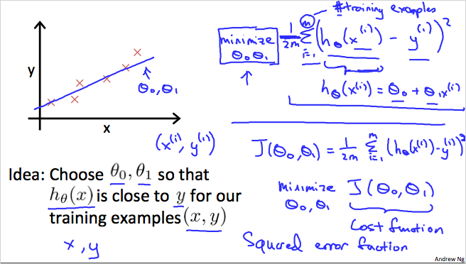
위와같이 빨간색 X 위치에 데이터가 존재할때 그것을 가장 비슷하게 따르도록 직선방정식h(x) 를 찾는다. 그것은 적절한 을 찾는것인데, 어림짐작으로는 찾을수 없다. 에 임의의 모든 값을 대입해봐서 cost function 을 구했을때 가장 낮은 값을 갖는 을 선택하면 된다. 목적은 Cost Function을 최소화 하는것이다. Cost Function이 작아질 수록 Hypothesis Function의 정확도는 향상된다.
1.2.5. Simplified Cost function of Linear Regression
가설/비용함수 개념을 더 잘 이해하기 위해서 우리는 \theta_0 를 0으로 만든 단순화 버전을 사용할 것이다. 단순화 시킨 의 그래프는 원점을 지난다. 정리하면 다음과 같다.
| basic | simplified | |
|---|---|---|
| Hypothesis: | ||
| Parametears: | ||
| Cost Function: | ||
| Goal: |
| 가설함수 | 비용함수 |
|---|---|
| input값 에 대한 함수 | parameter 에 대한 함수 (직선의 기울기를 좌우함) |
단순화된 버전으로 다음의 예를 살펴보자. 다음과 같은 Training Data가 주어졌다고 하자.
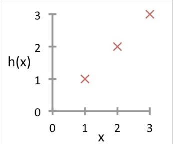
먼저 실제 데이터(Training data)
X가 x-y평면에 흩뿌려져 있다.(그림과 다르게 더 불규칙할 수 있음) 우리 목적은 최대한 그 데이터를 잘 모사 할 수 있는 직선을 찾는것이다.
이제 의 값에 따른 가설함수와 cost 함수의 관계가 어떻게 변화하는지 살펴보자.
일때
결론적으로 은 실제 데이터(Training data)와 정확히 일치하게 되고, 이 예시 데이터에서 은 0으로 우리의 목적인 최소값이 된다. (예측값 - 실제값)이 0이 된다.
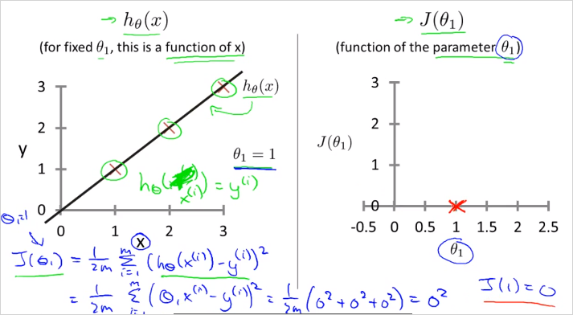
그래프 설명: 왼쪽의 plot
X는 "실제 값"(Training data)이다. 거기에 "예측 값"인 을 그렸다.
우측: 일때 값은 0이 된다. 이다.
그리고 가 된다. 실제 데이터도 를 따라 위치해있으므로 두 데이터가 정확히 일치한다.
가령 집 크기가 2일때 예측한 짒값은 2인데 실제 집값도 2이다. 라는 의미
실제 데이터가 를 따라 무한히 주어지지는 않을 테지만, 비용함수 계산 결과 0으로 나오므로 여기서 우리가 선택한 직선인 는 실세계를 정확히 거의 예측할 수 있는 것이다. 결국 Linear Regression은 실제 이미 알고있는 유한한 데이터를 기반으로 모르는 값을 예측/추측 할때 사용한다.
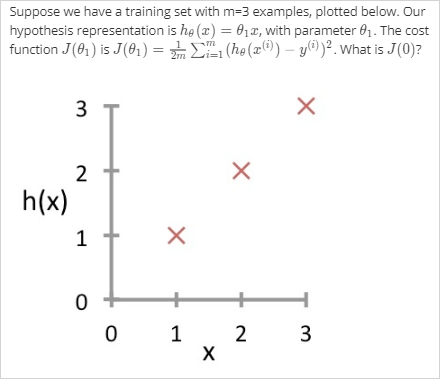
질문: 에서 의 결과는 예측값이고 는 실제 값이다. 그런데 아래 그래프에서 y축은 예측값이지 실제 값이 아니지 않은가?
그래프에서 y 축은 실제값을 나타내는게 맞다. 가 찍는 그래프는 y에 대한 예측값을 찍는것이다. 반면
X로 표기된 값이 실제 값이다. 여기서 설명하는 linear regression은 supervised learning이기 때문에 주어진 training set(data set)의 y값 즉 정답을 이미 다 알고있다는 가정하에 한다. 따라서 (예측값-실제값)이 맞다.
가 1일때는 예측 모델(?) 예측값이 실제값과 동일해진다는것을 설명한 것이다.
따라서 실제 training set과 h 그래프는 위와 같이 표현되는게 더 정확하다.
위 연습문제를 계산해보면 결과는 아래와 같음
일때

가령 집 크기(x)가 2일때 예측한 짒값(y)은 1이었는데, 실제 집값은 2었다는 의미
그리고 일때
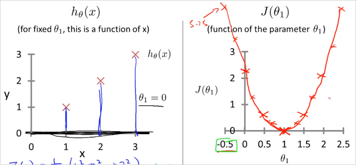
1.2.6. Cost function of Linear Regression
이제 를 사용한 실제 Cost function 을 살펴보자. 과 이 모두 존재하기 때문에 Cost function 는 그림과 같이 3차원 그래프가 될 것이다.
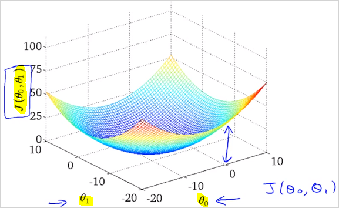
3차원 그래프는 아래 우측과 같이 보기편하게 Countour plot(등고선 그래프)으로 변경해서 사용할것이다. 위에서 내려다 본 모습과 일치하고 같은 등고선은 같은 높이의 를 의미한다.
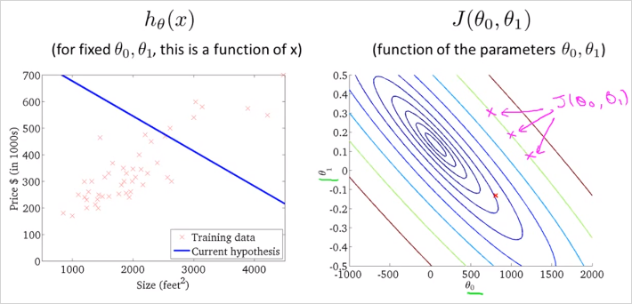
우측 그래프의 빨간점 x 는 = 800 인데 이값으로 을 그려보면 좌측과 같다. 실제 데이터(training data) X plot을 전혀 따라가고 있지 못하다. 의 값또한 최소값(중심부) 에서 멀리 떨어져있기 때문에 꽤 높은 비용을 쓰고 있다.
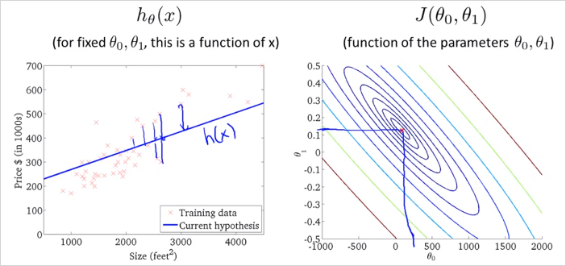
따라서 더 좋은 Hypothesis function h는 Cost function J의 최소값과 비슷할 수록 더 좋다. 참고로 앞으로는 더 많은 parameter 를 사용할것이다. 그렇게 되면 더이상 그래프로는 표현할 수 없다. 더 많은 parameter 를 사용한다는 의미는 함수 형태가 더 복잡해진다는 의미이다. 이것은 실제 데이터를 더욱 정확히 반영할 것이다. 결국 우리가 해야할 것은 S/W를 사용해서 과 그리고 함수 J의 최소값을 찾는것이다. 이제 J가 최소화 되도록 과 을 자동으로 찾는 알고리즘에 대해 알아보자.
1.2.7. Parameter Learning (Gradient Descent)
지금까지 hypothesis function, h 에 대해 알아보았고 cost function을 통해 h의 parameter()값에 따라 실제 세계의 데이터(training data)를 얼마나 잘 반영하는지 측정하는 방법에 대해 알아보았다. 이전 장에서 값에 따라 h의 정확도가 어떻게 향상되는지는 알아봤지만, 어떻게 값을 찾는지는 아직 모른다. 이번에는 가장 적합한 hypothesis function의 공식을 구성하는 parameter()들을 어떻게 추정(estimate) 하는지 알아본다. Gradient Descent 알고리즘 이다.
1.2.8. Gradient Descent 알고리즘 수학적 정의
Gradient Descent알고리즘은 Cost function, J() 의 최소값을 찾기 위해 사용할 수 있다. Gradient Descent 알고리즘은 Linear Regression 에만 쓸 수 있는건 아니고, 범용적인 알고리즘이다.
- 기본 아이디어
- 어떤 값으로 과 를 초기화하여 시작한다 (보통 0)
- 를 최소화 하는 방향으로 과 를 변화시킨다. (J가 최소값이 될때 까지)

초기 지점부터 최소 지점으로 내려가야 한다. 어떻게 내려가는지 여러가지 알고리즘이 존재한다.
어느 지점에서 시작을 하느냐에 따라 어떤 지점으로 도착할지가 다를 수 있다.참고이 그래프와는 다르게 Linear regression에서는 cost function J의 최소점이 무조건 1개이다.
공식은 다음과 같다.
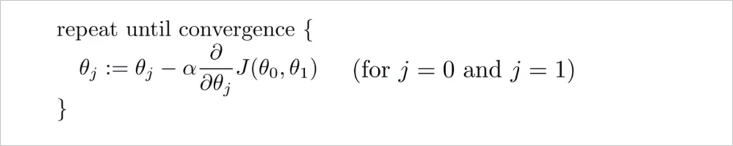
공식 해설
수학에서 기호 := 할당한다(assignment)의 의미이다.a := b,a := a + 1은 컴퓨터 프로그래밍에서 변수에 값을 할당하는것과 동일하다.
반면a = b는 주장(assertion)이다. a와 b가 같다고 주장하는 것이다. (컴퓨터 프로그램과 반대) 따라서a = a + 1는 틀린 공식이 된다. 왜냐하면 a와 a + 1은 절대 같은 값이 될 수 없기 때문이다.
Learning Rate (훈련 비율) 수치 이다. 기본적으로 언덕을 내려갈 때 얼만큼 큰 걸음을 내 딛어야하는지를 상징한다. 가령 가 크다면 매우 aggresive한 기울기 하강이 될것
생긴것 그대로 에 대한 함수 J의 미분 계수 이다. - 편미분. 하강 방향은 J의 편미분값에 의해 결정된다.(for j = 0 and j = 1)
여기서는 j가 0일 때와 1일때를 다룬다.
이 공식을 update하기 위해서 아래의 과정을 통해 과 이 지속적으로 업데이트 되야한다.
temp0 temp1을 먼저 계산한뒤 에 할당하는 이유는 temp1 에서 미분계수를 계산할때 바뀐 를 사용하지 않기 위함임을 주의해야한다.
1.2.9. Learning rate와 미분계수
이번에도 더 쉬운 이해를 위해 을 사용하지않고 parameter 하나만 사용, 으로 단순화 시켜보자.
미분계수
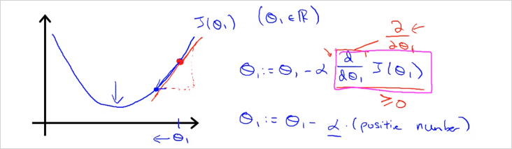
그래프의 빨간점 지점의 의 미분계수는 어떠한 양수값이다. 따라서 을 계산하면 은 점차 최저 J 값으로 이동하게 된다.
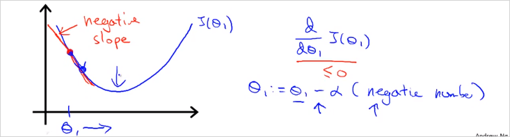
미분계수가 음수인경우도 마찬가지로 이 점차 최저 J 값으로 이동하게 된다.Learning Rate
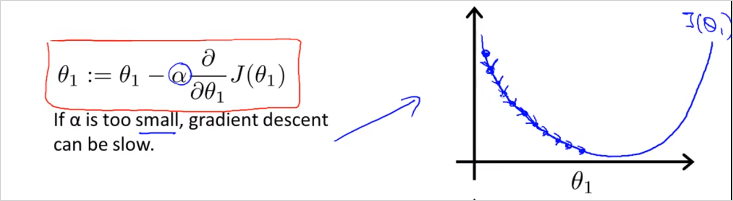
가 작다면 매우 작은 스텝으로 하강할것이고 많은 이동이 필요하다. 하강 속도가 느릴것이다.
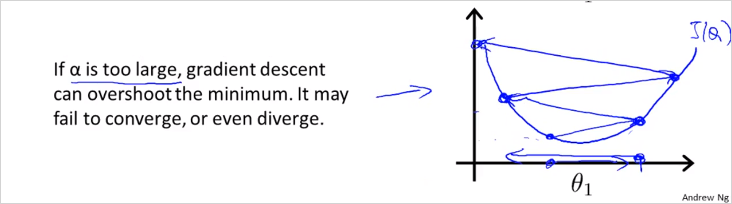
만약 이 큰데 시작점이 최소값 지점과 가까이 있다면 최소값을 넘어서 반대방향으로 이동할 것이고 또다시 반대편으로 이동하게 될것이다. minimum 을 Overshoot하게 되는것이다. 방향 전환 조차도 실패한다. 결국 수렴(converge) 에서 멀어지게 된다.문제: 만약 parameter 이 이미 최소값이라면 어떤 각도로 하강해야할까?
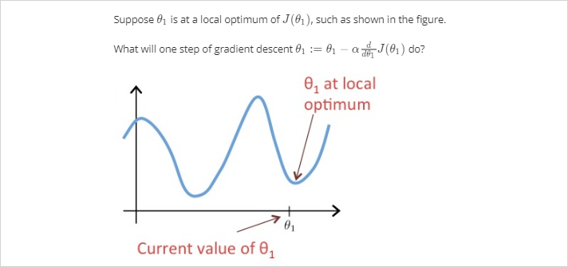
미분계수가 0 이기 때문에 그대로 이 되어 변동이 없다. 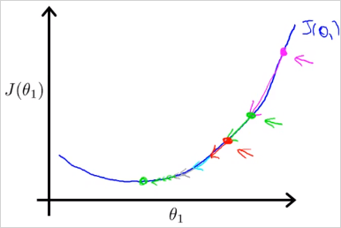
하강할 수록 점점 더 작은 거리를 이동하게 된다. 왜냐하면 최소값에 도달할수록 기울기가 작아지며 미분계수값이 작아지기 때문이다. 따라서 굳이 값이 작아질 필요가 없다.
1.2.10. Gradient Descent for Linear Regression
이제 Gradient Descent를 Linear Regression에 적용해보자.
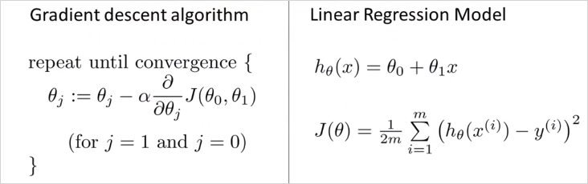
이제 우리가 하려는 것은 Gradient Descent 알고리즘을 사용해서 를 최소화 하려는 것이다. Cost function J()를 알고리즘 공식에 대입하기만 하면 된다. 먼저 아래와 같이 알고리즘에서 미분계수 항 에 대입하여 (a)로 풀어쓴뒤, j=0, j=1일때 각각 편미분하면 에 대한 미분계수 (b), (c)를 구할 수 있다.
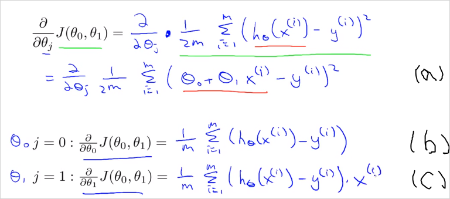
이것을 Gradient Descent 알고리즘에 다시 대입하면 아래와 같다. 이제 값을 계산할 수 있는 알고리즘이 공식화 되었다.
초기에 주어진 , 을 가지고 모든 training set의 와 차의 합을 구한다. 공식에 따라 먼저 , 에 해당하는 값을 구한뒤 그다음에 , 에 각각 대입한다. 그렇게 두번째 , 값을 구할 수 있는것이다. 이것을 반복하다보면 아래 그림과 같이 cost function 가 최소값이 되는 , 지점에 점차 수렴하게 된다(목적 달성). 당연히 , 가 바뀔때마다 hypotheis function 도 달라진다. (주의할 사항은 이 두값이 동시에(simultaneously) update 되어야한다는 점이다 , 이 바뀔때 마다 가설 함수도 바뀌기 때문이다. )
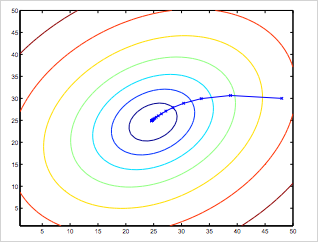
이 알고리즘을 다른말로 Batch Gradient Descent 라고 부른다. 지금 배운것은 cost function J의 최소값을 구하기 위해 반복적 알고리즘을 사용했다. 참고로 나중에는 반복이 없이도 J의 최소값을 구할 수 있는 방법에 대해 알아볼 것이다. 이로써 Gradient Descent 알고리즘이라는 첫번째 기계학습 알고리즘을 배웠다.
참고1: (a) -> (c) 편미분 풀이과정
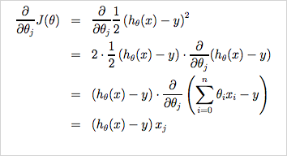참고2: Linear regression에서는 cost function J의 최소점이 무조건 1개이다. 그래프의 모양은 bowl-shape이다. 이를 convex quadratic function 이라고 부름.